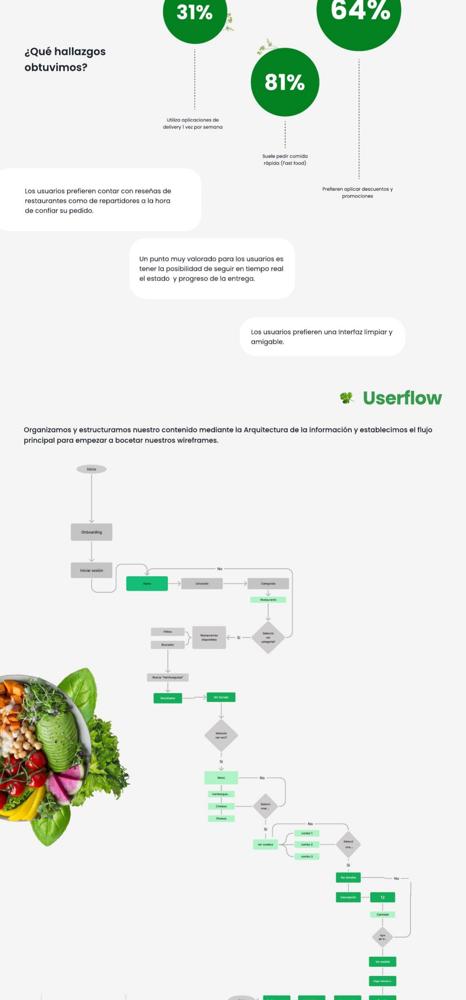
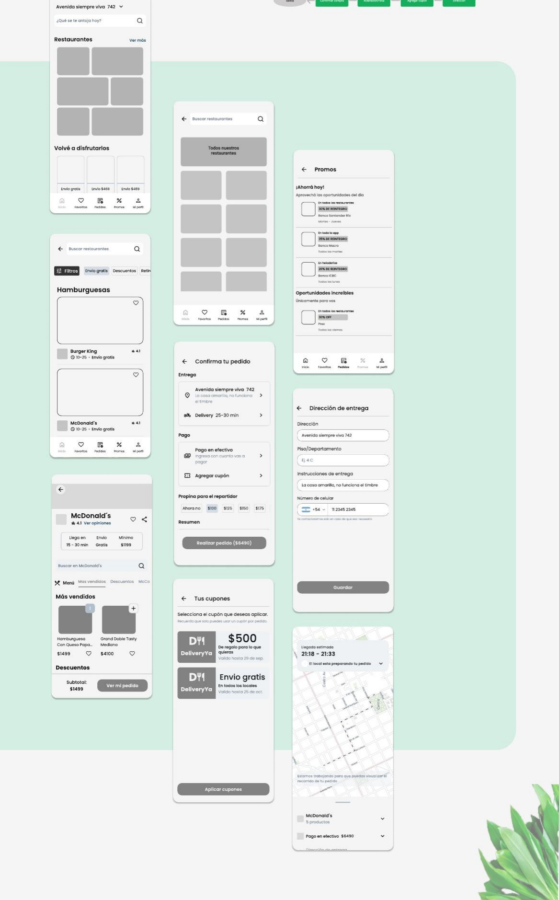

Design a mobile food delivery experience where users can discover restaurants, compare options and place orders from one clear flow.
Case study / Mobile commerce
A food delivery app concept built around faster choice-making.
DeliveryYa explores a mobile ordering experience for moments when users want to quickly compare restaurants, browse food categories, customize items and complete an order without unnecessary friction.
Mobile UX
Food Delivery
Filters
Ordering Flow
UI Concept

UX/UI Designer across app structure, category browsing, filtering, item detail screens, ordering states and visual direction.
Reduce decision fatigue through clear categories, practical filters, readable restaurant cards and predictable customization patterns.
Story
The problem was not finding food. It was narrowing the choice.
The initial research framed the core tension as decision overload: users arrive with a broad craving but still need to compare cuisine, delivery conditions, offers and item options before they can act.
I organized the experience around progressive decisions. Categories establish direction, filters reduce the set, restaurant cards expose comparison criteria and item details delay customization until the user has committed to a dish.
01 / Product Flow
Discovery, comparison and customization in one mobile journey.
The screen set explores the core path of a delivery app: category discovery, restaurant browsing, filters, item details, add-ons and order preparation.
- Restaurant cards surface ratings, delivery context and product imagery.
- Filters help users narrow choices by delivery, offers and food type.
- Item customization makes modifiers and add-ons visible before checkout.

02 / Interface evidence
Make the next decision visible on every screen.
The final screen set connects browsing, filtering, product detail, customization and order preparation. The layouts use familiar mobile commerce patterns so the product does not ask users to learn a new interaction model during a time-sensitive task.

03 / Outcome
A coherent mobile concept from broad intent to prepared order.
The outcome is a connected product direction rather than a set of isolated food-app screens. The case demonstrates how information hierarchy and sequencing can reduce hesitation without claiming a measured conversion result that was not tested.